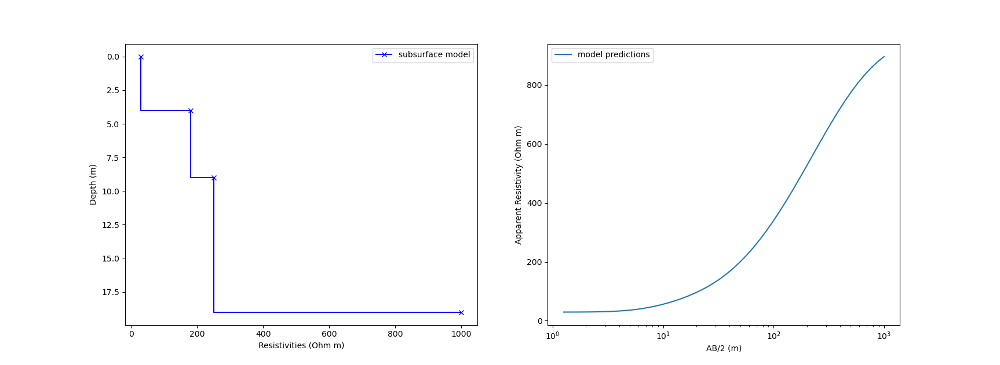
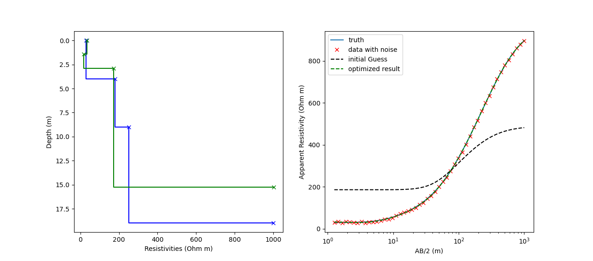
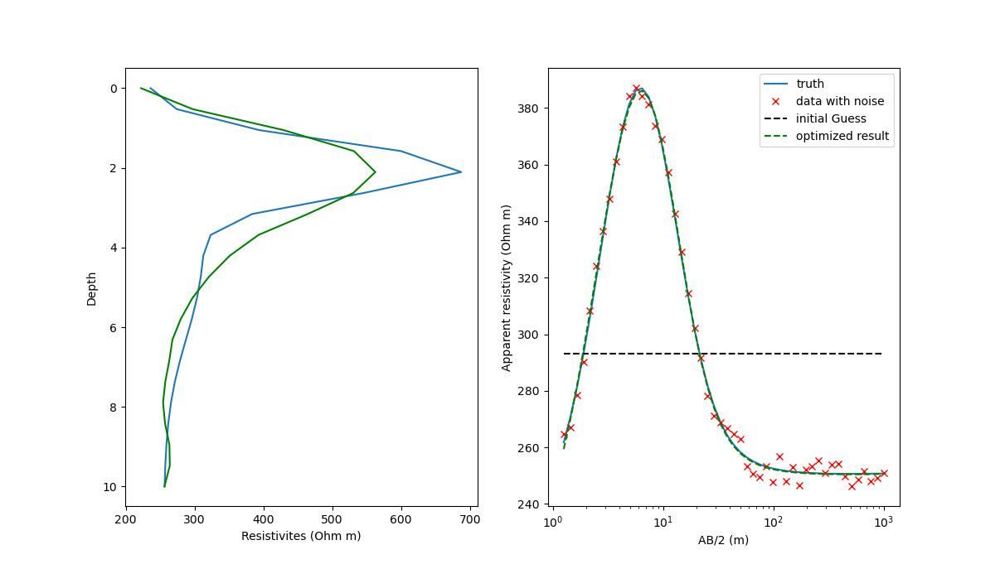
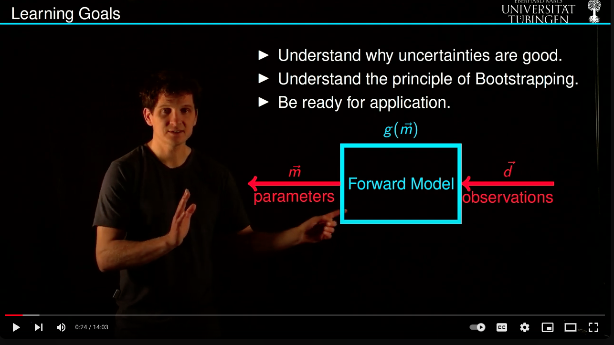

Vertical electrical sounding
In a vertical electrical sounding survey, this assumption is that the resistivity varies only in the vertical. This is an appropriate assumption, e.g., for floodplains and allows for a much quicker survey compared to a full tomography setup which would also map change in the lateral direction. The solution of the Laplace/Poisson equations underlying the resistivity method are in large parts analytical and can be coded (comparatively) easily without using more advanced methods such as finite differences etc.. Please refer to Binley & Slater section 4.2.1.3 for more details. The input parameters for this model are the survey geometry (here: Schlumberger setup where the distance between the current electrodes A and B is progressively increased ) and the assumed subsurface model. The latter is for example described as multiple blocks with a given thickness and resistivity.
{kind=link}
import numpy as np
import matplotlib.pyplot as plt
# Forward Model for VES
def VESForward_RD(Params,VectorABHalf):
ParameterLength = len(Params)
if ParameterLength % 2 == 1:
r = Params[0:int((ParameterLength+1)/2)] # resistivities
t = Params[int((ParameterLength+1)/2):ParameterLength] # thickness
s = VectorABHalf
ls = len(s)
u = np.zeros(ls)
rho_semu = np.zeros(ls)
for ii in range(1,ls+1):
q = 13
f = 10
m = 4.438
x = 0
e = np.exp(np.log(10)/(2*m))
h = 2 * q - 2
u[ii-1] = s[ii-1]*np.exp(-f*np.log(10)/m-x)
l = len(r)
n = 1
li = n + h
a = np.zeros(li)
for i in range(1,li):
w = l
T = r[l-1]
while w > 1:
w = w-1
aa = np.tanh(t[w-1]/u[ii-1])
T = (T+r[w-1]*aa)/(1+T*aa/r[w-1])
a[i-1] = T
u[ii-1] = u[ii-1]*e
i = 1
rho_a = 105*a[i-1]-262*a[i+1]+416*a[i+3]-746*a[i+5]+1605*a[i+7]
rho_a = rho_a-4390*a[i+9]+13396*a[i+11]-27841*a[i+13]
rho_a = rho_a+16448*a[i+15]+8183*a[i+17]+2525*a[i+19]
rho_a = (rho_a+336*a[i+21]+225*a[i+23])/10000;
rho_semu[ii-1] = rho_a
else:
print('Params must be odd number (first resistivities, then layer thickness.')
rho_semu = 0;
return rho_semu
# set parameters of the subsurface model
Params = np.array((30,180,250,1000,4,5,10)) # first resistivities, then thicknesses
VectorABHalf = np.logspace(0.1,3) # forward model uses Schlummberger Array
# create synthetic observations for a given subsurface model
data = VESForward_RD(Params,VectorABHalf)
# Visualize the results
fig, (ax1, ax2) = plt.subplots(1, 2)
NL = int(np.floor(len(Params)/2))
ax1.plot(Params[0:NL+1],np.cumsum(np.append(0,Params[NL+1::])),'b-x',drawstyle = 'steps',label='subsurface model')
ax1.invert_yaxis()
ax1.set_xlabel('Resistivities (Ohm m)')
ax1.set_ylabel('Depth (m)')
ax1.legend()
ax2.semilogx(VectorABHalf,data, label = 'model predictions')
ax2.set_xlabel('AB/2 (m)')
ax2.set_ylabel('Apparent Resistivity (Ohm m)')
ax2.legend()
plt.show()
Inversion with a Twin Experiment
The idea of a Twin experiment is to test the workflow of the inversion by creating synthetic observations with some additional noise for a given subsurface model. The inversion can then be tested as it should ideally reconstruct the subsurface model from the observations. If it doesn’t this kind of experiment can give interesting insights for trade-offs between different model parameters. In a VES surveys, such trade-offs between resistivities and layer thickness may occur. Because the forward model is clearly non-linear, we will use a in-built optimizer in order to find the minimum of the associated cost function. This optimizer will use a variant of the previously discussed Gauss-Newton method and unsurprinsingly does require a starting model. Here are the results and the workflow of a Twin experiment for a VES survey. It clearly highlighs that multiple sub-surface models will explain the data almost equally well.
{kind=link}
import numpy as np
import matplotlib.pyplot as plt
import scipy as sy
import scipy.optimize as opt
# Forward Model and model data misfit
def VESForward_RD(Params,VectorABHalf):
ParameterLength = len(Params)
if ParameterLength % 2 == 1:
r = Params[0:int((ParameterLength+1)/2)] # resistivities
t = Params[int((ParameterLength+1)/2):ParameterLength] # depth
s = VectorABHalf
ls = len(s)
u = np.zeros(ls)
rho_semu = np.zeros(ls)
for ii in range(1,ls+1):
q = 13
f = 10
m = 4.438
x = 0
e = np.exp(np.log(10)/(2*m))
h = 2 * q - 2
u[ii-1] = s[ii-1]*np.exp(-f*np.log(10)/m-x)
l = len(r)
n = 1
li = n + h
a = np.zeros(li)
for i in range(1,li):
w = l
T = r[l-1]
while w > 1:
w = w-1
aa = np.tanh(t[w-1]/u[ii-1])
T = (T+r[w-1]*aa)/(1+T*aa/r[w-1])
a[i-1] = T
u[ii-1] = u[ii-1]*e
i = 1
rho_a = 105*a[i-1]-262*a[i+1]+416*a[i+3]-746*a[i+5]+1605*a[i+7]
rho_a = rho_a-4390*a[i+9]+13396*a[i+11]-27841*a[i+13]
rho_a = rho_a+16448*a[i+15]+8183*a[i+17]+2525*a[i+19]
rho_a = (rho_a+336*a[i+21]+225*a[i+23])/10000;
rho_semu[ii-1] = rho_a
else:
print('Params must be odd number (first resistivities, then layer thickness.')
rho_semu = 0;
return rho_semu
def CostFunction(Params,VectorABHalf,data):
rho_semu = VESForward_RD(Params,VectorABHalf)
LF = sum((rho_semu-data)**2)
return LF
# set variables
Params = np.array((30,180,250,1000,4,5,10)) # first resistivities, then thicknesses
VectorABHalf = np.logspace(0.1,3) # forward model uses Schlummberger Array
# creat synthetic true data
data = VESForward_RD(Params,VectorABHalf)
# add noise
random = np.random.uniform(-5,5,len(data))
data_noise = data+random
# first guess
Params_guess = np.array((190,190,190,500,5,10,15))
data_guess = VESForward_RD(Params, VectorABHalf)
#this is the inversion, use lest maxiter if you want it faster but less well converged
LF_min = opt.minimize(CostFunction,Params_guess, args=(VectorABHalf,data_noise),method='trust-constr',bounds=((0,3000),(0,3000),(0,3000),(0,3000),(0,30),(0,30),(0,30)),options={'maxiter': 150, 'disp': True})
print(f'This is the optimized result {LF_min.x}')
print(f'This is the relative error {LF_min.x/Params}')
# plot data + inversion results
fig, (ax1, ax2) = plt.subplots(1, 2)
NL = 3
ax1.plot(Params[0:NL+1],np.cumsum(np.append(0,Params[NL+1::])),'b-x',drawstyle = 'steps')
ax1.plot(LF_min.x[0:NL+1],np.cumsum(np.append(0,LF_min.x[NL+1::])),'g-x',drawstyle = 'steps')
ax1.invert_yaxis()
ax1.set_xlabel('Resistivities (Ohm m)')
ax1.set_ylabel('Depth (m)')
ax2.semilogx(VectorABHalf,data, label = 'truth')
ax2.semilogx(VectorABHalf,data_noise,'rx', label = 'data with noise')
ax2.semilogx(VectorABHalf,VESForward_RD(Params_guess, VectorABHalf),'k--', label = 'initial Guess')
ax2.semilogx(VectorABHalf,VESForward_RD(LF_min.x, VectorABHalf),'g--', label = 'optimized result')
ax2.set_xlabel('AB/2 (m)')
ax2.set_ylabel('Apparent Resistivity (Ohm m)')
plt.legend()
plt.show()
Inversion including regularization
In the previous example, the number of layers is a hyper-parameter that needs to be chosen ahead of time and requires some expert knowledge about the specific survey area. We can change this by assuming many equidistant layers which only vary in their resistivity. Depending on the vertical resolution and maximum sounding depth, this can result in many model parameters which are arguably more difficult to invert than in the previous case. However, we can use regularization and prescibe a smoothness constrained so that the resistivities do not vary too strongly with depth. This is a nice example of including additional knowledge in form of regularization. Here is the workflow.
{kind=link}
import numpy as np
import matplotlib.pyplot as plt
import scipy as sy
import scipy.optimize as opt
# Forward Model and model data misfit
def VESForward_RD(Params,VectorABHalf):
ParameterLength = len(Params)
if ParameterLength % 2 == 1:
r = Params[0:int((ParameterLength+1)/2)] # resistivities
t = Params[int((ParameterLength+1)/2):ParameterLength] # thickness
s = VectorABHalf
ls = len(s)
u = np.zeros(ls)
rho_semu = np.zeros(ls)
for ii in range(1,ls+1):
q = 13
f = 10
m = 4.438
x = 0
e = np.exp(np.log(10)/(2*m))
h = 2 * q - 2
u[ii-1] = s[ii-1]*np.exp(-f*np.log(10)/m-x)
l = len(r)
n = 1
li = n + h
a = np.zeros(li)
for i in range(1,li):
w = l
T = r[l-1]
while w > 1:
w = w-1
aa = np.tanh(t[w-1]/u[ii-1])
T = (T+r[w-1]*aa)/(1+T*aa/r[w-1])
a[i-1] = T
u[ii-1] = u[ii-1]*e
i = 1
rho_a = 105*a[i-1]-262*a[i+1]+416*a[i+3]-746*a[i+5]+1605*a[i+7]
rho_a = rho_a-4390*a[i+9]+13396*a[i+11]-27841*a[i+13]
rho_a = rho_a+16448*a[i+15]+8183*a[i+17]+2525*a[i+19]
rho_a = (rho_a+336*a[i+21]+225*a[i+23])/10000;
rho_semu[ii-1] = rho_a
else:
print('Params must be odd number (first resistivities, then layer thickness.')
rho_semu = 0;
return rho_semu
def CostFunction(Resistivities,Thickness,VectorABHalf,Data,DD,LagrangeMult):
rho_semu=VESForward_RD(np.append(Resistivities,Thickness),VectorABHalf)
LF = sum((rho_semu-Data)**2) + LagrangeMult*np.sum(np.matmul(DD,Resistivities)**2)
return LF
# Here we now change to a constant depth spacing. For each spacing one resistivity.
# The smaller the dz, the longer the inversion will take.
dz=0.5;maxz=10;z=np.linspace(0,maxz,int(maxz/dz));Np=len(z);
rhos = 200 + 400 * np.exp(-(z - 2) ** 2 / 0.8) + 125 / (1 + np.exp(-(z - 1))) - 21 / (0.3 + np.exp(-(z - 5)))
# Get the smoothness constraint Matrix
DD = 1/dz**2*(np.diag((np.arange(1, Np + 1)) * 0 + 2) + np.diag((np.arange(1, Np) * 0 - 1), 1) + np.diag((np.arange(1, Np) * 0 - 1), -1))
# Flatness at boundaries
DD[0, 0] = -1 / dz
DD[0, 1] = 1 / dz
DD[0, 2] = 0
DD[-1, -2] = -1 / dz
DD[-1, -1] = 1 / dz
#Initial Guess assumed to be constant
b_0 = rhos*0+300;
#Resistivities first, thickness second. The latter are now constant.
Params = np.concatenate([rhos, np.diff(z)])
Params_guess = np.concatenate([b_0, np.diff(z)])
# Setup your Observations, best would be on a different grid but we don't do this for now.
# If we have only few observations regularization is more important
No = 50
VectorABHalf = np.logspace(0.1,3,No)
data_truth = VESForward_RD(Params, VectorABHalf)
print(f'Np: {Np}')
print(f'No: {No}')
# Prepare the twin experiment adding noise
random = np.random.uniform(-5,5,No)
data_noise = data_truth+random
#Choose Lagrange Multiplier (the larger the smoother)
LagrangeMult = 1e-4
bnds = [(0, 1000) for k in rhos]
#Start the inversion. Reduce Maxiter if it should go faster with less convergence.
print('Starting the Inversion with smoothness constrained')
#LF_min = opt.minimize(VESForward_RD_ss_reg,b_0, args=(np.diff(z),VectorABHalf,data_noise,DD,LagrangeMult),method='trust-constr',options={'maxiter': 20, 'disp': True})
LF_min = opt.minimize(CostFunction,b_0, args=(np.diff(z),VectorABHalf,data_noise,DD,LagrangeMult),bounds=bnds,method='trust-constr',options={'maxiter':75, 'disp': True})
print(f'This is the optimized result {LF_min.x}')
print(f'This is the relative error {LF_min.x/rhos}')
fig, (ax1, ax2) = plt.subplots(1, 2)
ax1.plot(rhos,z, label = 'truth')
ax1.plot(LF_min.x,z,'g-', label = 'inverted')
ax1.set_xlabel('Resistivites (Ohm m)')
ax1.set_ylabel('Depth')
ax1.invert_yaxis()
ax2.semilogx(VectorABHalf,data_truth, label = 'truth')
ax2.semilogx(VectorABHalf,data_noise,'rx', label = 'data with noise')
#Initial Guess
ax2.semilogx(VectorABHalf,VESForward_RD(Params_guess, VectorABHalf),'k--', label = 'initial Guess')
#Predictions from Inversion
ax2.semilogx(VectorABHalf,VESForward_RD(np.append(LF_min.x,np.diff(z)), VectorABHalf),'g--', label = 'optimized result')
ax2.legend()
ax2.set_xlabel('AB/2 (m)')
ax2.set_ylabel('Apparent resistivity (Ohm m)')
plt.show()
Inversion including bootstrapping
We have not covered the theory in WS2023, but I put it here for those who are interested in quantifying errors of the inversion. In the inversion of the block model VES we noticed that a number of trade-offs occur between resistivities and layer thickness. bootstrapping is one way to quantify it and I have outline the theory here:
